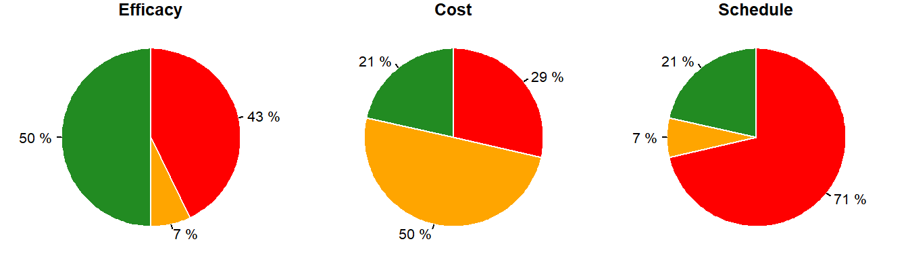
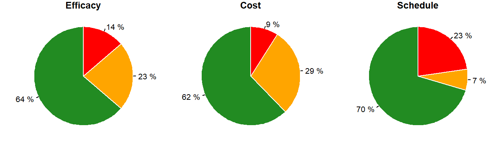

1 Risk Register
1.1 High Risks
High risk items are assessed with high Efficacy, Cost, or Schedule risk.

| Number | Description | Strategy | Efficacy | Cost | Schedule |
|---|---|---|---|---|---|
| Contract Acquisition Risks | |||||
| CA-003 | Larger contracts may be broken into multiple contracts. | Accept | Moderate | High | High |
| Environment | |||||
| EN-001 | The assumption made during the feasibility study was the site could be used for construction with some remediation. Environmental site investigation may result in unusable site or high cost. This risk pertains to required real estate footprint on the RDB. | Accept & Mitigate | Low | Moderate | High |
| Non-Regulatory | |||||
| L-001 | If required land rights are not provided by a willing seller, condemnation and/or quit take authority could take longer to accomplish than the scope and schedule of this project may allow. | Accept | Low | High | High |
| L-002 | Costs for project land acquisition could exceed what the state of Illinois is willing to pay for the property. | Accept | Low | High | High |
| L-003 | Costs for project land rights hazardous waste remediation could exceed what the state of Illinois is willing to spend on remediation and/or could take longer than scope of project to complete. | Accept & Mitigate | Low | High | High |
| Project & Program Mgmt | |||||
| PMM-003 | Eventual operation, maintenance, repair, rehabilitation, and replacement responsibilities should be based on the expected project life of 50-years rather than a commitment in perpetuity. (PPA issue) | Accept & Mitigate | High | Moderate | Moderate |
| PPM-001 | Concern that the PPA cannot be negotiated and signed on time. | Accept | High | Moderate | High |
| PPM-002 | Lack of efficient funding in PED could delay design. | Accept & Transfer | High | Moderate | High |
| Real Estate | |||||
| RE-001 | Right descending bank may not be available for use. | Accept & Mitigate | Low | Moderate | High |
| Technical Risks | |||||
| TR-006g | Navigation delays during construction | Accept & Mitigate | Low | Moderate | High |
| TR-008 | There may be problems with achieving the desired effectiveness of the entire ANS control system. | Accept & Mitigate | High | Moderate | Low |
| TR-009d | Single source for speakers, sole proprietor | Accept & Mitigate | Low | Low | High |
| TR-009f | Operability, maintainability, sustainability. This risk is due to lifecycle costs with the speakers over time. | Accept | High | Low | Low |
| TR-021 | Velocity can pull floaters or small fish through barriers when barge traffic is active. | Accept & Transfer | High | Low | Low |
1.2 Open Risks
Risk items are considered “open” if they are still highly relevant for ongoing team consideration (Status = Open).

| Number | Description | Strategy | Efficacy | Cost | Schedule |
|---|---|---|---|---|---|
| Contract Acquisition Risks | |||||
| CA-001 | All contracts are assumed to be unrestricted (full and open). If this assumption is incorrect, costs will be higher. | Accept & Mitigate | Low | Moderate | Low |
| CA-002 | Systems need to be packaged to meet their intended functions so that warranties can be enforced. | Accept & Mitigate | Moderate | Moderate | Low |
| CA-003 | Larger contracts may be broken into multiple contracts. | Accept | Moderate | High | High |
| CA-005 | AE would not have capacity or execute in time | Accept & Mitigate | Low | Low | Low |
| Environment | |||||
| EN-001 | The assumption made during the feasibility study was the site could be used for construction with some remediation. Environmental site investigation may result in unusable site or high cost. This risk pertains to required real estate footprint on the RDB. | Accept & Mitigate | Low | Moderate | High |
| Impacts to Public Safety | |||||
| L-001 | If required land rights are not provided by a willing seller, condemnation and/or quit take authority could take longer to accomplish than the scope and schedule of this project may allow. | Accept | Low | High | High |
| L-002 | Costs for project land acquisition could exceed what the state of Illinois is willing to pay for the property. | Accept | Low | High | High |
| Non-Regulatory | |||||
| L-003 | Costs for project land rights hazardous waste remediation could exceed what the state of Illinois is willing to spend on remediation and/or could take longer than scope of project to complete. | Accept & Mitigate | Low | High | High |
| OPP-001 | Entrance and approach conditions to assess potential improvements and efficiencies to assess the impacts of changes. Impact of generation cooling water intake; Impact of main channel flows coming down from the dam | Accept | Low | Low | Low |
| OPP-002 | The shippers and carriers (i.e., commercial users such as American Waterway Operators, Illinois River Carriers Association, etc.) relies on continued use of the lock. | Realized | Low | Low | Low |
| PC-007 | Project construction and operation costs are too high for added system redundancy given the risk. Adding construction and operation costs for redundancy when such redundancy exists at Romeoville | Accept & Mitigate | Low | Low | Low |
| Opportunities | |||||
| PMM-003 | Eventual operation, maintenance, repair, rehabilitation, and replacement responsibilities should be based on the expected project life of 50-years rather than a commitment in perpetuity. (PPA issue) | Accept & Mitigate | High | Moderate | Moderate |
| Opportunity | |||||
| PPM-001 | Concern that the PPA cannot be negotiated and signed on time. | Accept | High | Moderate | High |
| PPM-002 | Lack of efficient funding in PED could delay design. | Accept & Transfer | High | Moderate | High |
| Project & Program Mgmt | |||||
| RE-001 | Right descending bank may not be available for use. | Accept & Mitigate | Low | Moderate | High |
| REGEN-002 | The large array acoustic barrier may make noise that can be heard outside of the water. | Accept & Mitigate | Low | Low | Low |
| REGEN-003 | Concern that the noise produced by the acoustic deterrent could harm or cause hearing loss to persons in the water at the location of the speakers. | Accept & Mitigate | Low | Low | Low |
| Real Estate | |||||
| REGEN-008 | Non-navigational wall is not an appropriate floodway use and there is not enough room on the peninsula to add the fill material without impacting the floodway. | Accept & Mitigate | Low | Moderate | Moderate |
| Regulatory and Environmental Risks | |||||
| REGEN-009 | Illinois Public Body of Water Impacts. The DesPlaines river is a public waterway in Illinois and requires mitigation for impacts. | Accept & Mitigate | Low | Moderate | Moderate |
| TR-001a | Operational safety concerns of emptying filling system due to potentially increased hawser forces. | Accept & Mitigate | Low | Low | Low |
| TR-001d | Validation of biological parameters - does it work when floaters are present? | Accept & Mitigate | Low | Low | Low |
| Technical Risks | |||||
| TR-006e | Navigation delays during operations | Transfer | Moderate | Moderate | Low |
| TR-006f | Floodway Impact | Accept & Transfer | Low | Low | Low |
| TR-006g | Navigation delays during construction | Accept & Mitigate | Low | Moderate | High |
| TR-008 | There may be problems with achieving the desired effectiveness of the entire ANS control system. | Accept & Mitigate | High | Moderate | Low |
| TR-009 | Efficacy of Acoustics | Accept | Moderate | Low | Low |
| TR-009a | Size & Number of Speaker Array | Accept | Low | Low | Low |
| TR-009b | Ambient noise | Accept | Moderate | Low | Low |
| TR-009c | Noise on barges | Accept | Low | Low | Low |
| TR-009d | Single source for speakers, sole proprietor | Accept & Mitigate | Low | Low | High |
| TR-009e | Interaction with electrical barrier | Accept & Mitigate | Moderate | Low | Low |
| TR-009f | Operability, maintainability, sustainability. This risk is due to lifecycle costs with the speakers over time. | Accept | High | Low | Low |
| TR-009g | Interaction with Bubble Curtain | Accept & Mitigate | Moderate | Low | Low |
| TR-009h | Ambient Noise | Accept | Low | Low | Low |
| TR-010 | Software engineering may be required to operate all systems under the same controls at the lock house. | Accept & Mitigate | Moderate | Moderate | Low |
| TR-013 | Entrance and approach conditions to asses potential improvements and efficiencies to asses the impacts of changes. Impact of generation cooling water intake; Impact of main channel flows coming down from the dam | NA | NA | Low | NA |
| TR-017 | Balance of water between hydro power and flushing lock may be difficult. | Accept | Low | Low | Low |
| TR-018a | Methods and materials to reduce stray current impacts could exceed the current conceptual design estimate. | Accept & Mitigate | Moderate | Low | Low |
| TR-018b | Coast Guard could provide final operating and safety parameters different from our current assumptions and changes the efficacy of the electric barrier after implementation or impact cycle time for lockage. | Accept & Transfer | Moderate | Low | Low |
| TR-019 | Need to establish a baseline to measure against the 15 min delay time (from feas.). That time may not be accurate and the barriers may not be as effective as in the feas. report. Need to know what are we designing towards in terms of flushing, etc. | Accept & Transfer | Low | Low | Low |
| TR-020 | Concern that bubbles could effect maneuverability of barges and may not remove the fish. | Accept & Transfer | Low | Low | Low |
| TR-020a | Concerns with maneuverability and safety of small recreational craft passing over the ABCD Deterrent. | Mitigate | Low | Low | Low |
| TR-021 | Velocity can pull floaters or small fish through barriers when barge traffic is active. | Accept & Transfer | High | Low | Low |
| TR-022 | Tainter gates in ice chute. Stability concerns, hydrographic erosion of the downstream rock, dam anchor interference, redundancy of the flushing system (can we use one gate?), debris. | Accept & Mitigate | Low | Low | Low |
| TR-024 | Communication between lock, deterrent, and navigation operators. | Accept & Mitigate | Low | Low | Low |
1.3 Closed Risks
Risk items are considered “closed” if they are no longer highly relevant for ongoing team consideration (Status = Closed).| Number | Description | Strategy | Efficacy | Cost | Schedule |
|---|---|---|---|---|---|
| Contract Acquisition Risks | |||||
| CA-004 | The type of contract, Design/Build or Design/Bid/Build, can affect timeline and cost. | Accept | Low | Moderate | Low |